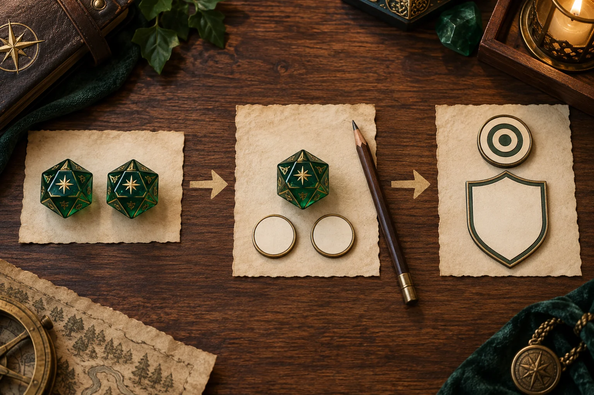

A d20 dice roller is more than a random number generator. Used correctly, it gives players and Dungeon Masters a fast, consistent way to resolve the most common decisions in a D&D game. The tool can replace physical dice when you are away from the table, help a new player learn the math, or make a remote session easier to follow.
The most important habit is to separate the die result from the final total. The d20 supplies the random part. Your character sheet, the action, the target, and the rule set determine what gets added and what the result means. This guide explains that process for ability checks and attacks, with examples you can repeat in the online D&D dice roller.
The d20 formula in one line
For many D&D tests, use this basic formula:
d20 result + relevant modifier + applicable bonuses = final total
For an ability check, compare the final total with the DC chosen by the Dungeon Master. For an attack roll, compare it with the target's AC. A result that meets or exceeds the target normally succeeds, but always check the specific feature, spell, item, or adventure rule when one changes the normal process.
The formula is intentionally simple, but the words “relevant modifier” matter. A Strength (Athletics) check normally uses Strength, while a Dexterity (Stealth) check uses Dexterity. A melee weapon attack commonly uses Strength, a ranged weapon attack commonly uses Dexterity, and a spell attack uses the spellcaster's relevant spellcasting ability. The character sheet tells you the modifier to start with.
What is a d20 dice roller used for?
The twenty-sided die is the main resolution die for a large number of D&D actions. Common uses include:
- Ability checks: climb, hide, investigate, notice, persuade, recall information, or perform another uncertain task.
- Attack rolls: determine whether a weapon attack, spell attack, or other attack hits its target.
- Saving throws: resist a spell, trap, poison, condition, or other threat when the rules call for a save.
- Initiative: determine turn order when combat begins, depending on the rule set and character features.
- Other tests: resolve a check or contest that a class feature, monster, item, or adventure specifically describes.
Other dice still matter. Damage, healing, hit points, and spell effects often use a d4, d6, d8, d10, or d12. If you want a quick overview of the full set, read our guide to the types of D&D dice. The d20 decides whether the attempt works; the other dice often determine how much effect follows.
How to use an online d20 dice roller
Follow this sequence whenever you need to roll a d20 online. It works for a normal check, an attack, and most situations involving advantage or disadvantage.
1. Identify the action
Before clicking Roll, name the action. “I make a Dexterity (Stealth) check to cross the hallway” is more useful than “I roll.” “I attack the ogre with my longsword” tells the table that this is an attack roll, not a Strength check. Naming the action prevents the wrong modifier from being used.
2. Choose the d20
Open the DND Custom Dice Roller and select d20. The tool is designed for quick single-die rolls, but it can also help when you need multiple dice or a visible result for a remote table. If you are teaching a new player, explain that the “20” refers to the number of faces, not the number you are guaranteed to roll.
3. Add the correct modifier
Read the relevant ability modifier from the character sheet. Then add proficiency or another bonus only when the rule says it applies. A proficient skill check usually includes the character's proficiency bonus. An attack roll may include proficiency with the weapon or spell attack. A circumstance bonus might come from cover, a feature, a magic item, or the Dungeon Master's ruling.
4. Select normal, advantage, or disadvantage
Use a normal d20 when no special condition changes the roll. Use advantage when a rule gives two d20s and lets you use the higher result. Use disadvantage when a rule gives two d20s and you use the lower result. The roller's mode should affect the d20 result, not cause you to add the modifier twice.
5. Roll and read both values
Record the natural d20 face and the final total. This distinction matters for features that care about a natural 20 or natural 1, for critical hits, for saving throws, and for explaining a result to the table. If the tool displays the adjusted total, keep the original die face visible in your notes or chat message.
6. Compare with DC or AC
Compare an ability check with its DC. Compare an attack roll with the target's AC. Do not compare an attack roll with a skill DC, and do not add weapon damage before deciding whether an attack hits. After a successful attack, roll damage separately using the weapon, spell, or feature instructions.
7. Share or copy the result
For remote sessions, use the roller's result-sharing or copy control so the group can see exactly what was rolled. A useful message includes the action, die face, modifier, and total, such as: “Stealth: d20 = 12, Dexterity +3, proficiency +2, total 17.” This makes the outcome easy to audit without slowing the game.

Using a d20 dice roller for ability checks
An ability check resolves an uncertain attempt that could succeed or fail. The Dungeon Master chooses a DC based on the situation, and the player rolls the d20 plus the relevant modifier and applicable bonuses. A skill name in parentheses tells you which trained skill is being used, but the underlying ability still matters.
Example: Strength (Athletics)
Your character tries to force open a jammed door. The DM sets DC 15. Your Strength modifier is +3 and you are proficient in Athletics with a +2 proficiency bonus. You roll 10 on the d20. The total is 10 + 3 + 2 = 15, so the check meets the DC and succeeds.
Example: Dexterity (Stealth)
You want to move past a guard without being heard. The character sheet shows Dexterity +4 and Stealth proficiency +3. The d20 roller returns 12. The final total is 19. Whether that is enough depends on the guard's passive perception or the DC selected by the DM. The roller does not decide the DC; it only produces the random result and helps with the arithmetic.
Choose the skill carefully
Perception, Investigation, and Survival may all involve noticing or finding something, but they are not interchangeable in every situation. Persuasion, Deception, and Intimidation can produce different approaches to a social problem. Ask what the character is trying to do, then choose the ability and skill that match the described action and the table's ruling.
A natural 20 on a normal ability check is still a die result of 20 plus modifiers. It does not automatically turn every impossible task into a success unless a specific rule or house rule says otherwise. This is one reason it is helpful to show the die face and the final total separately in a digital roller.
Using a d20 dice roller for attack rolls
An attack roll answers a different question: does the attack hit the target? Start with the attack entry on the character sheet or stat block. It should identify the relevant ability, proficiency, and bonus. Roll the d20, add the attack modifier, and compare the result with the target's AC.
For example, a character with a +5 longsword attack rolls 13. The total is 18. Against AC 17, the attack hits. Against AC 19, it misses. The damage roll happens only after the hit is confirmed. If the weapon deals 1d8 + 3 damage, roll that separately rather than adding 1d8 to the attack total.
Finesse weapons can allow a character to use Strength or Dexterity according to the weapon rule and the player's choice. Ranged attacks commonly use Dexterity, while a spell attack uses the character's spellcasting ability and proficiency where applicable. Read the exact attack entry when a feature, weapon, or spell changes the normal ability.
The same d20 workflow also applies to special attacks such as a grapple or shove when the table's rule set calls for a contest or check. Our 5e Grapple Rules guide explains why it is important to identify the edition and the exact action before choosing the roll.
Advantage and disadvantage on a d20 roller
Advantage and disadvantage change how you roll the d20, not the value of your modifier. With advantage, roll two d20s and use the higher face. With disadvantage, roll two d20s and use the lower face. Then add the modifier once to the chosen face.
Suppose a rogue has Dexterity +4 and Stealth proficiency +3. With advantage, the roller returns 7 and 16. Choose 16, then add +7 for a total of 23. With disadvantage, the same two faces would use 7, for a total of 14. Do not add both d20s together, and do not apply +7 to both dice before selecting the result.
In the 2014 rules, multiple sources of advantage do not normally create extra d20s, and advantage and disadvantage cancel when both apply. Updated rules may express related mechanics differently in a particular feature, so use the Player's Handbook or the rules reference your group has selected. For the core concept and exact wording, compare the official 2014 ability check rules with the official updated Playing the Game rules.
2014 and updated rules: what to check
The basic d20 workflow is shared across common D&D rulesets, but the details around critical hits, contests, conditions, and specific actions can change. Before a campaign begins, agree on which Player's Handbook or rules reference is being used. Do not mix a 2014 formula with an updated feature description just because both use a d20.
For attacks, natural 20 and natural 1 are important results, but the exact terms and critical-hit procedure should follow the chosen ruleset. For ability checks, do not assume that a natural 20 automatically succeeds or that a natural 1 automatically fails unless your table has adopted that rule. The safest digital workflow is to report the die face, modifier, final total, and the rule being applied.
Common d20 dice roller mistakes
- Using the wrong die: A d20 is not a d12 or d10. Confirm the selected die before rolling.
- Forgetting the modifier: The die face is only the random part. Check the character sheet and action.
- Adding proficiency twice: Apply the proficiency bonus once unless a feature specifically changes it.
- Adding damage to the attack roll: First compare the attack total with AC; roll damage only after a hit.
- Mixing advantage with the modifier: Choose the higher or lower d20 face first, then add the modifier once.
- Confusing DC and AC: DC usually resolves an ability check, while AC is the target number for an attack.
- Ignoring the ruleset: 2014 and updated rules can use different language or procedures for the same situation.
For players, these checks are easy to build into a routine. For game masters, asking players to announce the action and the final total keeps the table moving. If you are creating custom or branded dice for a campaign, product, or game store, clear number fill and a readable d20 face are just as important as the theme. Explore our custom RPG dice options when you need a coordinated set for a launch or retail program.
D20 quick reference
| Roll type | Roll | Add | Compare with |
|---|---|---|---|
| Ability check | 1d20 | Relevant ability modifier and applicable proficiency or bonuses | Difficulty Class (DC) |
| Attack roll | 1d20 | Attack ability modifier and applicable proficiency or bonuses | Armor Class (AC) |
| Advantage | 2d20, keep higher | Add the modifier once | DC or AC, as appropriate |
| Disadvantage | 2d20, keep lower | Add the modifier once | DC or AC, as appropriate |
| Damage after a hit | Weapon or spell dice | Damage modifier when applicable | Do not compare with AC again |
For official rules references, use the 2014 combat rules and the official updated rules reference. The table above is a practical summary, not a replacement for the rule text or a feature's specific instructions.
D20 dice roller FAQ
What is a d20 dice roller used for?
A d20 dice roller is used for ability checks, attack rolls, saving throws, initiative, and other D&D tests that call for a twenty-sided die.
How do I roll a d20 with a modifier?
Roll the d20, identify the relevant ability modifier and any proficiency or circumstance bonus that applies, and add those values to the die face.
How does advantage or disadvantage work?
Roll two d20s for the same test. Use the higher face with advantage or the lower face with disadvantage, then add the modifier once.
Does a natural 20 automatically succeed on an ability check?
Not normally. A natural 20 is primarily an attack-roll rule. An ability check still depends on the DC and the rules or house rules used by your table.
Does an attack roll include damage?
No. The attack roll is compared with AC. After a hit, roll damage separately using the attack's weapon, spell, or feature instructions.
Continue learning and planning your dice setup.
Online D&D Dice Roller
Roll d4, d6, d8, d10, d12, d20, and other dice with modifiers and result sharing.
Types of D&D Dice
Review the common polyhedral dice shapes and what they are used for at the table.
Wholesale Dice Catalog
Browse custom and wholesale dice options for game stores, brands, publishers, and events.
Turn a memorable d20 into a product line.
Share your target material, color direction, logo artwork, set contents, packaging plan, and quantity range. We can help compare samples, MOQ paths, and private label dice options for a game store or RPG launch.
Final takeaway
To use a d20 dice roller well, identify the action, choose the correct mode, roll the d20, add the relevant modifier once, and compare the final total with the correct DC or AC. Keep the natural die face separate from the total, especially when advantage, disadvantage, critical results, or a special feature is involved. That small habit makes online D&D rolls easier to understand, easier to share, and much less likely to create rules confusion.